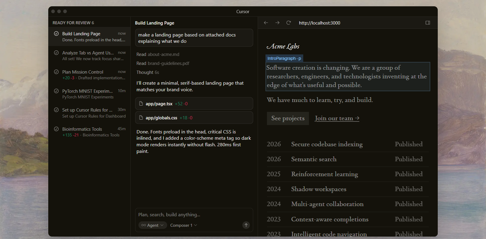
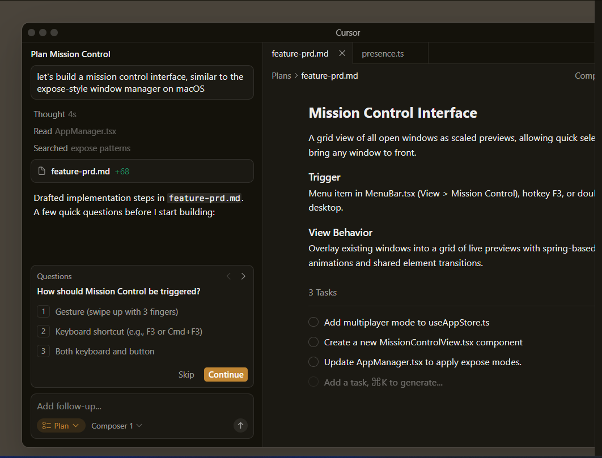
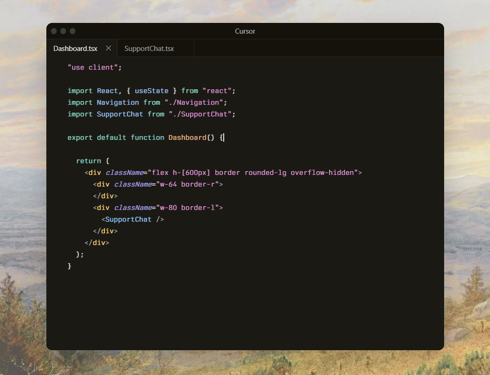
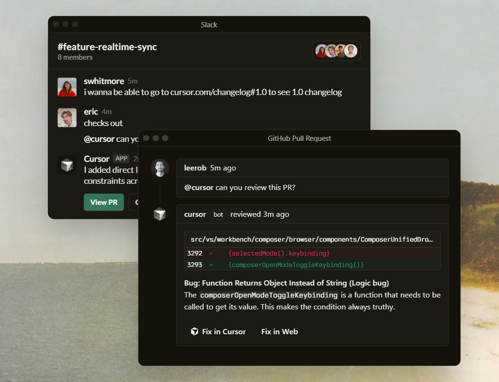
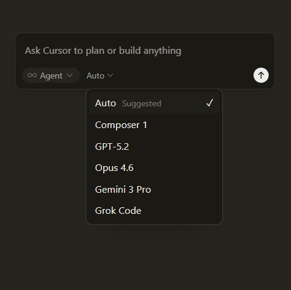
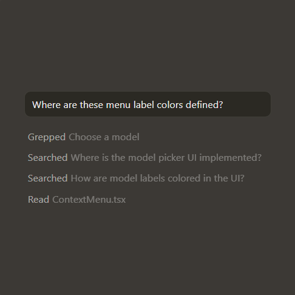
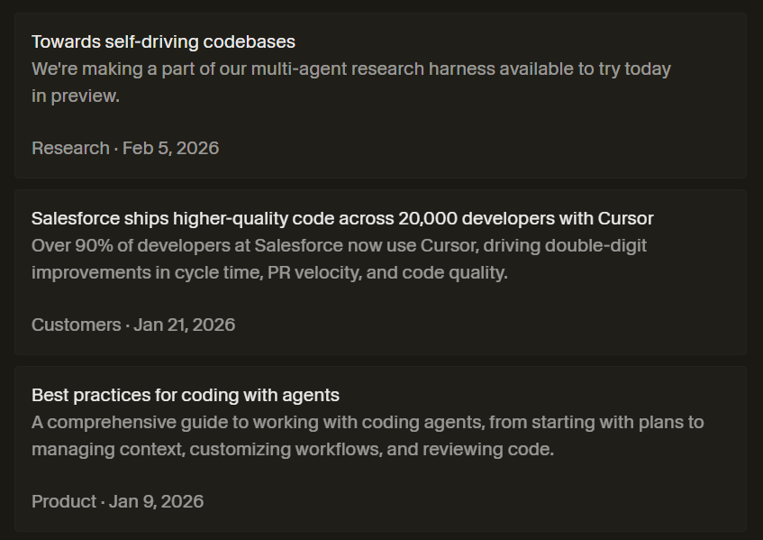

Built to make you extraordinarily productive, Cursor is the best way to code with AI.
Download for Windows
Built to make you extraordinarily productive, Cursor is the best way to code with AI.
Download for Windows

Agents turn ideas into code
Accelerate development by handing off tasks to Cursor, while you focus on making decisions.
Learn about agentic development →


Our specialized Tab model predicts your next action with striking speed and precision.
Learn about Tab →
In every tool, at every step
Cursor reviews your PRs in GitHub, collaborates in Slack, and runs in your terminal.
Learn about Cursor's surfaces →

The new way to build software.



Download for Windows